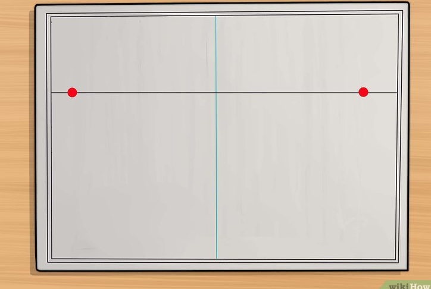

how to draw
selamat datang di kelas two point
prespektif dua titik adalah sudut pandang yang biasanya disebut mata elang
two point
berikut adalah langkah-langkah membuat prespektif two point perhatikan dengan seksama ya
pertama butlah dua titik di sudut yang ingin di tarik garis
mulailah membuat sketsa dari menarik garis lurus dari titik yang kamu buat

mulailah membuat bangunan dengan menarik garis vertikal tapi mengunakan patokan garis miring dari tarikan kedua titik

selamat mencoba....:v
trimakasih telah berkunjung mohon maaf kiranya ketika banyak kekurangan dari segalahal